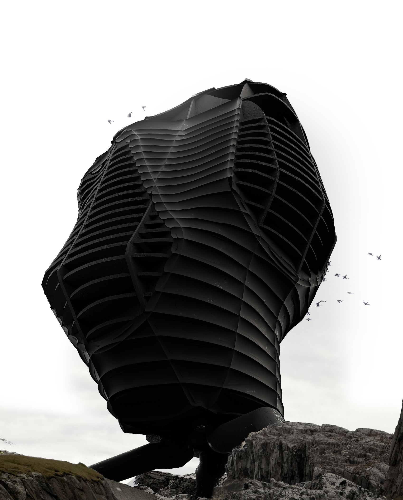
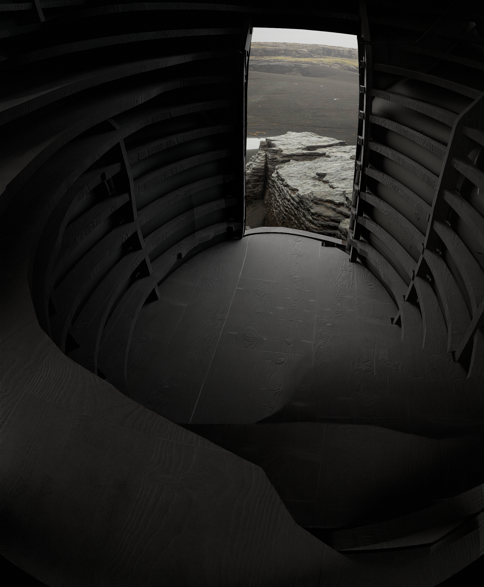
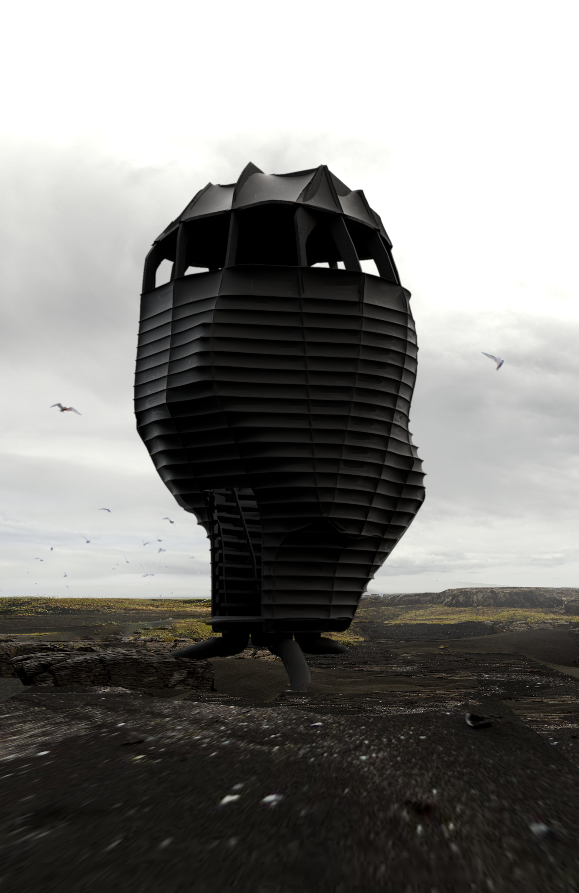
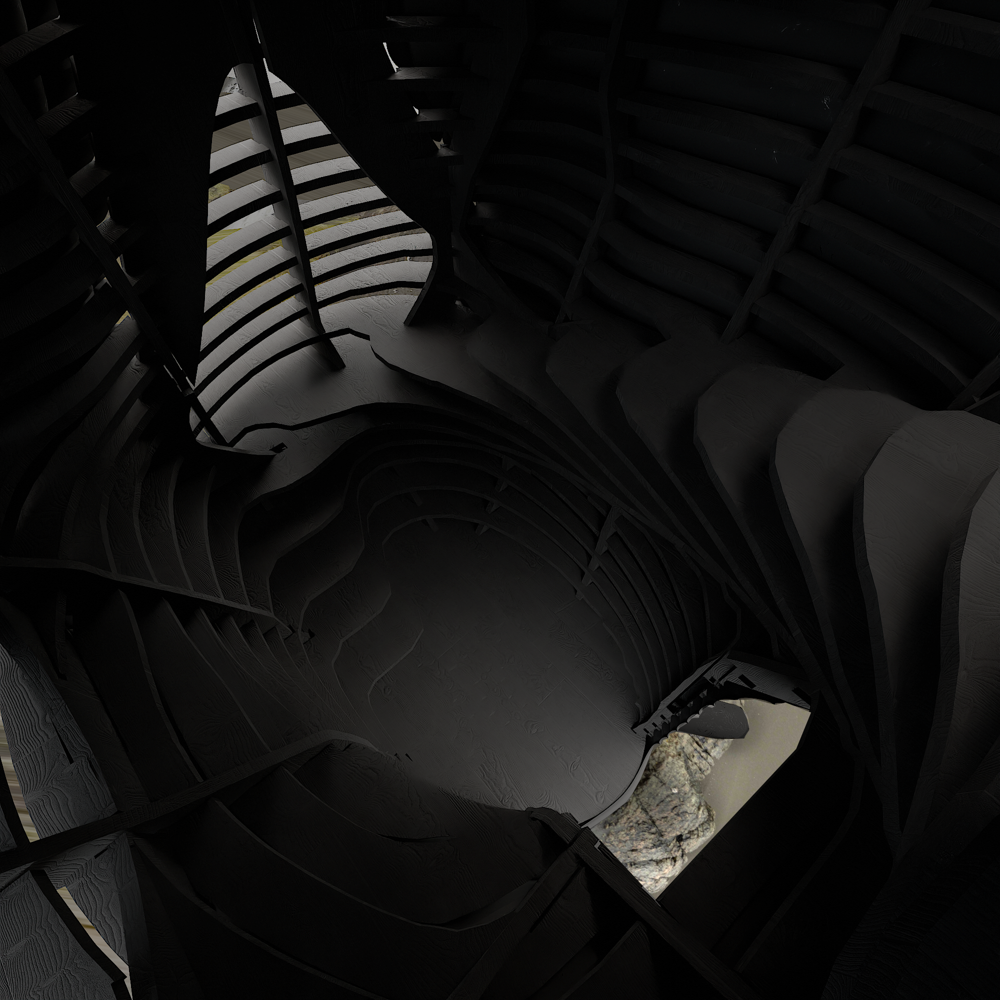
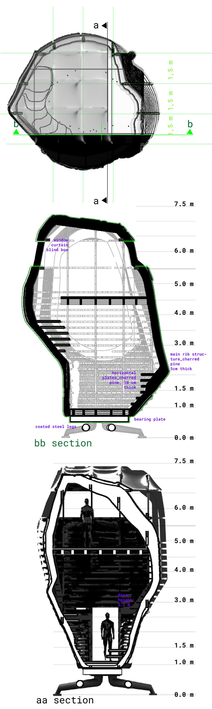
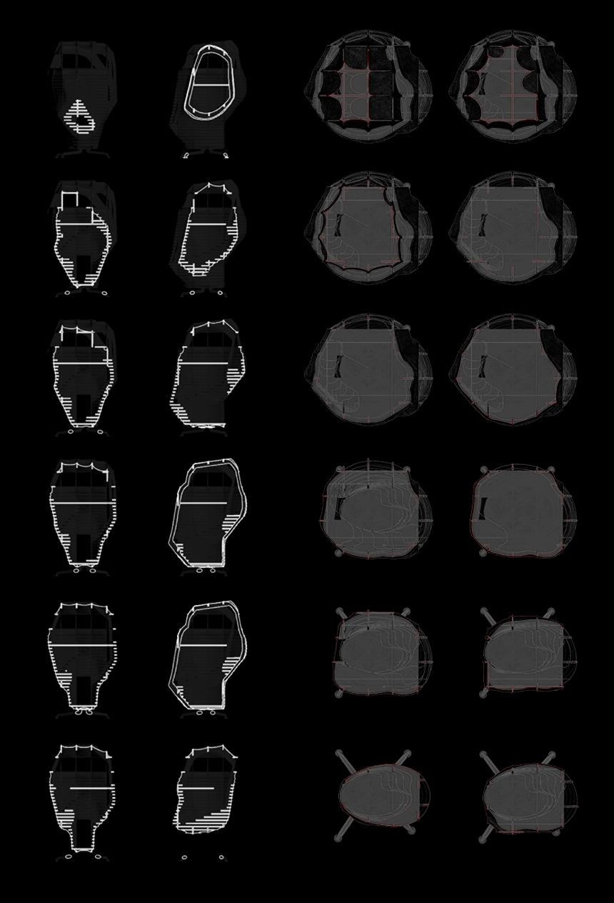

bird-watching-tower, 2 floors Height:7m, 5 people per floor


Entrance is lifted up from the ground, the height is overcomed with a rock from the site.
Materiality
The Structure: Charred Icelandic Larch We use Icelandic-Grown Siberian Larch, treated with the Shou Sugi Ban process.
Why: Larch is the only local timber with structural density.
Treatment: Fire-charring creates a carbon layer that provides weather resistance and pest control without chemicals.
Look: Deep black, matching the volcanic sand.
The Insert: Recycled Sæplast 70L Tubs Integrated into the timber grid are Sæplast 70L tubs—recycled directly from the Icelandic fishing industry.
Logic: Reusing these industrial containers reduces waste and structurally reinforces the grid.
The Skin: Industrial Shrink Wrap The facade is 12-mil (0.30mm) Flame Retardant heat shrink wrap.
History: This is the standard material used to winterize Icelandic trawlers on land.
Application: Heat-shrunk on-site to create a "drum-tight" skin. It sheds snow, blocks wind, and allows the dark timber skeleton to remain visible.


The structure [charred pine 5cm thick]: forms the tower's shape and makes the space leading to the top floors and the landings.
Fabrication: CNC cutting allows for off-site preparation of the main structure.
Logistics: Pieces are sized to fit standard trucks, streamlining transport.
Assembly: Basic on-site installation. No heavy machinery enters the site.
Foundation: No Excavation We strictly avoid deep foundations.
Steel Legs: Each structure sits on the marine coated legs and the steel bearing plate.
Thermal Gap: Detaching the structure from the ground eliminates the need for heavy floor insulation and protects the permafrost below.

Facade: shrink wrap- 0.30mm thick
